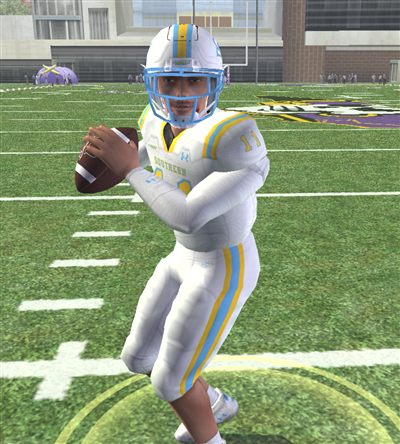
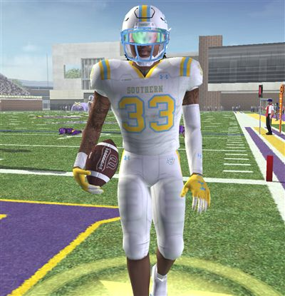

This page tracks the season one episode at a time — a new row goes into the table and a new section gets added to the narrative as each video actually releases, so it's never ahead of the channel. Through five weeks, Southern is 4–1 and 3–1 in AAC play. The USF loss was the roughest week of the season so far; the response at ECU was about as clean an answer as the offense could have given.
In This Report
- The Season So Far
- Foxworth Hits A Wall
- Molinich's Workload
- The Defense: The Question Got Answered
- Foxworth Answers Back At ECU
- Molinich's Four-Touchdown Day
- The Defense Responds Too
- What's Ahead
- Storylines To Watch
- The Takeaway
The Season So Far
| Wk | Opponent | Score | Result |
|---|---|---|---|
| 1 | vs Kentucky | 48–17 | Win ▶ Watch The Episode |
| 2 | vs North Texas | 31–7 | Win ▶ Watch The Episode |
| 3 | at Army | 44–12 | Win ▶ Watch The Episode |
| 4 | at USF | 23–45 | Loss ▶ Watch The Episode |
| 5 | at ECU | 42–19 | Win ▶ Watch The Episode |
| 6 | vs Louisiana | — | ▶ Watch The Episode |
| 7 | at No. 16 Texas | — | |
| 8 | at Navy | — | |
| 9 | Bye | ||
| 10 | at Temple | — | |
| 11 | vs UAB | — | |
| 12 | vs Memphis | — | |
| 13 | vs UTSA | — | |
The first three games were a combined 123–36. USF was a different story from the opening snap — a reigning AAC champion that made Southern look like a team playing its first real road test of the year for the second week in a row, and this time the result matched the difficulty. ECU, a week later, was the opposite kind of week entirely.
Foxworth Hits A Wall

Three weeks of a clean sophomore leap — zero interceptions, eight touchdowns — ran into USF's defense and didn't survive it. Foxworth went 5-of-19 for 107 yards with 2 interceptions before getting pulled in the third quarter, the first real stumble of his season. James Moody came off the bench and was sharper in relief, going 7-of-18 for 165 yards and 2 touchdowns. Nothing was announced right away about who'd start at ECU — for the first time all season, that question was actually open.
There's a strange symmetry to it. The last time these two teams played, in 2027, it was Moody getting benched against ECU and a true freshman named Joseph Foxworth coming off the bench to run the offense for the first time in his career. A season later, against that same opponent, Foxworth was the one walking back to the sideline and Moody was the one finishing the game — and whether this rematch would settle anything the way the last one did was the whole subplot heading into the matchup.
Molinich's Workload

112 rushing yards and 2 touchdowns against Kentucky, 226 and 2 more against North Texas, 222 rushing yards and 3 touchdowns at Army, then 125 more at USF — 685 yards on the ground through four games, plus 72 receiving yards and 3 receiving touchdowns on top of it. The preview's prediction was a decline toward 1,300–1,500 yards on the season as the offense balances out; this pace, if it held, would blow well past that. The one thing USF's defense couldn't take away was the run game — Molinich still got his, even in a loss. ECU didn't take it away either.
The Defense: The Question Got Answered
Three weeks of a defense that hadn't been tested against the run ended with an answer nobody wanted: USF gave up 276 rushing yards against it. The preview's biggest question — whether the nine-point ratings jump actually moved this unit out of the national bottom 10 — looks like it didn't, at least not against a real AAC run game. Through three weeks the box scores simply hadn't forced the issue; USF forced it immediately, and the defense didn't hold.
It wasn't a total collapse. Christian Thatcher's 17 tackles and 4 sacks through three games and Ricardo Jones' two interceptions were real positives earlier in the season, and neither got worse at USF — the run defense problem specifically is what showed up. ECU finished 2027 at 5–7, 3–6 in the AAC, a step down from USF's level. Whether that was a chance to patch the problem against lesser competition, or whether it would show up again regardless of opponent, was the question ECU actually answered.
Foxworth Answers Back At ECU
He got the start, and he answered about as emphatically as a quarterback can after a benching: 16-of-19 for 236 yards and 3 touchdowns, zero interceptions, in a 42–19 road win. A season ago it was Moody who got pulled against this same ECU team and a true freshman Foxworth who took the offense and never gave it back. This time Foxworth's the one who needed the response game, and he got it against the same opponent that launched his career in the first place. The "who starts at ECU" question that closed out last week's update didn't stay open long.
Molinich's Four-Touchdown Day
105 rushing yards and 2 touchdowns on the ground, plus 3 catches for 40 yards and 2 more touchdowns through the air — four total touchdowns in one game, his biggest single-game output of the season. Through five weeks he's at 790 rushing yards and 112 receiving yards, 14 total touchdowns. The preseason prediction of a decline toward 1,300–1,500 total yards for the year is looking more and more like a floor than a ceiling at this pace.
The Defense Responds Too
Jaelen McCracken logged 2 sacks and Dre Still picked off a pass — a cleaner defensive week than the USF game, against lesser competition, which is exactly the caveat worth keeping in mind. ECU finished 2027 at 5–7, a step down from a reigning AAC champion, so this result alone doesn't answer whether the run-defense problem from USF is actually fixed. It's a real data point in the right direction, not a conclusion.
What's Ahead
Southern and Louisiana have never played each other before — no series history, no tape to lean on. The one real thread between these programs is a recruiting one: Louisiana beat Southern out for 2027 prospect Yiannis Uwazurike, a Louisiana kid who picked home over Southern, and who was later cut from the Ragin' Cajuns roster. That's not why this game matters on the field, but it's the backstory sitting underneath a first-ever meeting at home for a team that just answered its toughest week of the season the right way.
Storylines To Watch
The MLB room after Pritchett. Todd Pritchett, the sophomore middle linebacker, tore a shoulder muscle in the USF game and is out for the season — the only serious injury on the roster through five weeks. No replacement has been named publicly, which makes the middle of this defense, already exposed once against a real run game, a real question mark heading into the back half of the schedule.
Jaelen McCracken's freshman season. A true freshman defensive end already has multi-sack games twice in Southern's first five weeks — 2 against North Texas, 2 more against ECU. That's happening at a position the preview flagged as a question mark. Worth tracking how big a role he's carved out by midseason.
James Moody's crossroads. The backup quarterback outplayed Foxworth in relief at USF — 7-of-18 for 165 yards and 2 touchdowns — and then watched Foxworth answer right back at ECU and reclaim the job cleanly. Moody's shown he can play winning football when called on; whether that's enough to hold his spot as the clear backup, or whether a strong relief outing like that starts a longer conversation about his future here, is worth watching the rest of the way.
Teddy Graves' best start yet. 5–7, then 8–6, then 6–6 — three seasons, three different ceilings, and still no real breakout. A 4–1 start through five games, with the toughest week of the season already answered, is the best this program has looked under Graves at this point in a season. How far that actually carries is still the open question, but it's a real different starting point than the last three years gave him.
The Takeaway
4–1, 3–1 in AAC play, and the response game went about as well as it could have — Foxworth bounced back clean, Molinich put up a four-touchdown day, and the defense that got gashed at USF looked much better against ECU, even if the competition level makes that an incomplete answer. Louisiana is next, a first-ever meeting with a real recruiting subplot attached, and a chance to see whether last week's bounce-back was the real version of this team or just a good week against a lesser opponent.